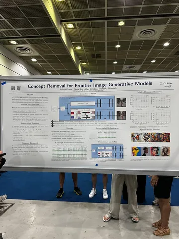

Есть такая задача — разучивать модель генерировать нежелательные концепты: объекты и отношения между ними, стили и прочее. Нужно это для white-box-сетапов — случаев, когда модель необходимо дать пользователю не через API, а как набор весов.
Авторы статьи предлагают использовать transcoder-блок, который конвертирует латент нежелательного концепта в null и дальше подаёт в боттлнек и декодер генератора. Задача — обучить этот transcoder так, чтобы на инференсе он какие-то концепты кодировал, а какие-то — игнорировал.
Мы пробовали более простой архитектурно, но более требовательный к качеству данных подход. В нём:
Оказалось, что авторы работы тоже много экспериментировали с этим методом и даже написали о нём отдельную статью. По их словам, он сложнее для качественной реализации, чем описанный в этой работе. А ещё — склонен негативно влиять на общую релевантность (что мы тоже замечали).
Разбор подготовил
#YaICML2026
CV Time
